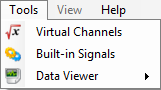

This menu contains all CANStream tools access

 Virtual Channels: Open the virtual channels editor.
Virtual Channels: Open the virtual channels editor.
 Built-in Signals: Open the built-in signals editor.
Built-in Signals: Open the built-in signals editor.
 Data Viewer: Open the data viewer.
Data Viewer: Open the data viewer.
Created with the Personal Edition of HelpNDoc: Free EPub and documentation generator